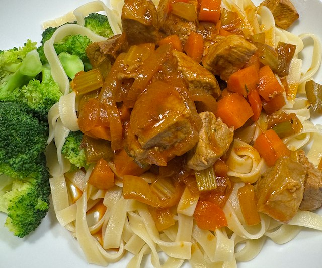

Pork Goulash

Serves: 4
Cook Time: 1 hour
By food network.
Ingredients
- 500g pork fillet, cut to strips
- ¼ tsp dried thyme
- olive oil
- 1 onion, sliced
- 1 celery stick, diced
- 2 carrots, diced
- 1 red pepper, diced
- 3 tbsp hot paprika
- 2 tbsp tomato puree
- 2 garlic cloves, minced
- 1 tsp caraway seeds
- 1 beef stock pot
- 1 tsp red wine vinegar
- 500g tagliatelle
Method
Heat pan to medium. Add olive oil, onion, carrot, celery and fry till softened. Add paprika, tomato puree, garlic, caraway seeds and fry for 2 min more.
Add beef stock pot and 250ml water. Simmer for 45 min.
Heat a frying pan to hot. Add olive oil, pork, thyme, salt and pepper. Fry rapidly for 2-4 min to color. Reserve the pork. Deglaze the pan with water, and add to the veg.
Cook the pasta.
When ready to serve, add the pork to the veg. Warm through and taste for salt.